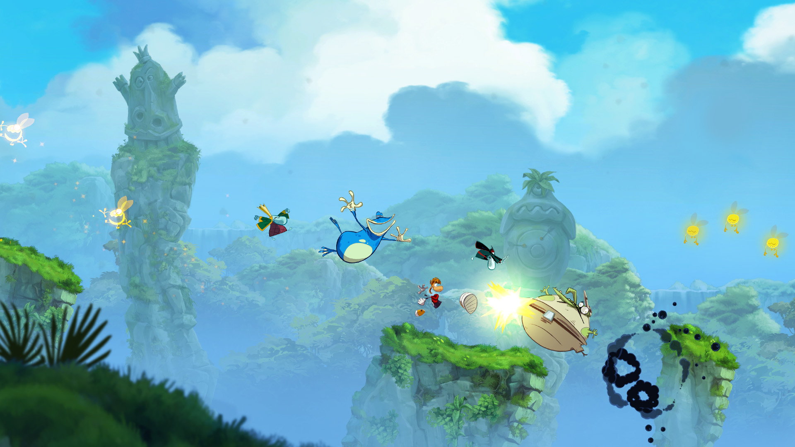

9.
Rayman Origins: A 2D Platformer in
the otherwise 3D platformer series, Rayman, that follows Rayman and his friends fighting Darktoons and other evil creatures that have infected the Glade of Dreams.
Being one of the best games in the series for it’s gameplay, level design, and art style.

10.
BIT. TRIP RUNNER: A retro inspired platformer
where you run from left to right, jumping and sliding to avoid or destroy obstacles and enemies, while running to the rhythm of chiptune-inspired music, part of a series
with varied gameplay and more aesthetically pleasing retro art.